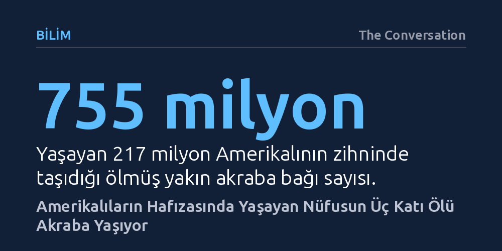

BILIM · The Conversation · 2026-10-24
Demografik simülasyonlar, ABD'de yaşayan 217 milyon kişinin hafızasında ölmüş yakınlarına ait 755 milyon doğrudan bağ olduğunu ortaya koyuyor. Yaşayan nüfusun üç katını aşan bu gölge nüfustaki akrabalar ortalama 25 yıldır hatırlanıyor ve yarısından fazlası bir asır önce doğmuş.
Toplumun yalnızca hayattakilerden ibaret olmadığını; hafızalarda yaşatılan ölülerin, yaşayan nüfusun üç katı büyüklüğünde bir sosyal varlık olarak bugünü şekillendirdiğini gösteriyor.

Cadılar Bayramı ya da Ölüler Günü gibi anmalar geride kaldığında, yitirilen yakınlar insanların zihninden ve sosyal evreninden silinip gitmiyor. Yapılan sosyolojik araştırmalar, Amerikalıların yaklaşık yüzde 44'ünün son bir yıl içinde bile ölmüş bir yakınının varlığını hissettiğini ya da onunla iletişim kurduğunu gösteriyor. Buna karşın klasik nüfus bilimi bugüne dek neredeyse sadece yaşayan bireyleri kayda geçirdi; hafızalarda asılı kalan bu görünmez topluluk demografik bir merak konusu yapılmadı.
Demografların geliştirdiği yeni bir modelleme ise alışılmışın dışına çıkarak yaşayanların zihninde varlığını sürdüren ölü yakınların boyutunu ve yaş dağılımını hesapladı. Araştırma sonuçları, ABD'de yaşayan yaklaşık 217 milyon Siyah ve beyaz Amerikalının zihninde, birinci ve ikinci derece ölmüş yakınlarına uzanan tam 755 milyon doğrudan akrabalık bağı bulunduğunu ortaya koyuyor. Bu büyüklük, hayattaki nüfusun üç katını aşan devasa bir "gölge nüfusun" bugün de aramızda dolaştığını gösteriyor. Öyle ki sokakta bayram kutlayan 15 yaşın altındaki her bir çocuğa karşılık, zihinlerde hatırlanan yaklaşık 21 vefat etmiş akraba düşüyor.
Araştırmacılar bu büyüklüğü saptamak için demografik mikrosimülasyon adı verilen bir hesaplama çerçevesinden yararlandı. Yaşayan bireylerin büyükanne, büyükbaba, anne, baba, kardeş, eş ve çocuk gibi en yakın aile halkalarına odaklanan simülasyon, geçmiş kuşakların izini sürmek üzere tasarlandı. Yöntem yurt dışındaki akrabalık ağlarını izleyemediği için çalışma zorunlu olarak yalnızca ABD sınırları içindeki Siyah ve beyaz nüfusla sınırlandırıldı.
Model kurulurken araştırmacılar çok belirleyici iki kural belirledi. İlk olarak, yalnızca bugün hayatta olan en az bir kişinin doğumundan sonra vefat etmiş kişiler hesaba katıldı; yani yaşayan hiç kimsenin kişisel belleğinde yer bulamayacak kadar eski kayıplar elendi. İkinci olarak, vefat eden her bir birey kendisini hatırlayan yaşayan yakını sayısı kadar sayıldı. Örneğin vefat etmiş bir kişi geride bir eş, bir yetişkin evlat, bir torun ve bir kardeş bırakmışsa, o kişi nüfus modeline dört ayrı bağ olarak kaydedildi. Böylece çalışma soyut bir ölü sayımı değil, hayattakilerin zihninde süregelen doğrudan bağların toplam hacmini ölçtü.
Elde edilen demografik göstergeler, insanların kaybettikleri yakınlarını ne kadar uzun süre zihinlerinde taşıdığını gözler önüne seriyor. Simülasyon sonuçlarına göre hatırlanan ölü akrabalar ortalama 25 yıl önce vefat etmiş durumda. Bu veri, bir insanın vefatının ardından çeyrek asır geçse bile arkasında bıraktığı akrabalık bağlarının kolay kolay kopmadığını ve hatıraların onlarca yıl canlı kaldığını kanıtlıyor.
Daha da çarpıcı olanı, bu gölge nüfusun yarısından fazlasının günümüzden 100 yılı aşkın bir süre önce dünyaya gelmiş olması. Hatırlanan akrabaların yaklaşık yüzde 10'luk bir kesimi 1900 yılından önce doğmuşken, 140 bininin doğum tarihi Amerikan İç Savaşı'nın öncesine uzanıyor. Bugün hayatta olan en yaşlı bireylerin bizzat tanıdığı ve hatırladığı büyükanneler ile büyükbabalar, iki asır öncesinin tarihsel tecrübesini günümüzün yaşayan dünyasına doğrudan bağlıyor.
İnsanlar inançları ya da dünya görüşleri ne olursa olsun, artık hayatta olmayan yakınlarıyla ilişkilerini gündelik yaşamlarında sürdürüyor. Bugün pişirilen bir aile yemeğinin tarifinde büyükanne, zor bir kararda dinlenen öğütte anne ya da baba, boş kalan bir koltuğun hüznünde ise kaybedilen bir eş yaşamaya devam ediyor.
Bu kişisel bağlar bir araya geldiğinde, resmi nüfus sayımlarında yer almayan fakat toplumun kimliğini, değerlerini ve kararlarını derinden etkileyen muazzam bir nüfus katmanı oluşturuyor. Demografik hesaplamalar, toplum dediğimiz yapının yalnızca bugün nefes alanlardan ibaret olmadığını; aramızdan ayrılmış milyonların geride bıraktığı bağlarla bugünü şekillendirmeyi sürdürdüğünü somut verilerle belgeliyor.